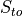
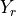
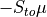
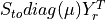
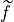
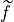

crnt4sbml.SemiDiffusiveApproach¶
-
class
crnt4sbml.SemiDiffusiveApproach(cgraph, get_physiological_range)[source]¶ Class for constructing variables and methods needed for the semi-diffusive approach.
-
__init__(cgraph, get_physiological_range)[source]¶ Initialization of the SemiDiffusiveApproach class.
Methods
__init__(cgraph, get_physiological_range)Initialization of the SemiDiffusiveApproach class. generate_report()Prints out helpful details constructed by crnt4sbml.SemiDiffusiveApproach.run_optimization()andcrnt4sbml.SemiDiffusiveApproach.run_continuity_analysis().get_key_species()Returns a list of string variables corresponding to the key species. get_non_key_species()Returns a list of string variables corresponding to those species that are not key species. get_boundary_species()Returns a list of string variables corresponding to those species that are defined as boundary species. get_decision_vector()Returns a list of SymPy variables corresponding to the decision vector for the optimization problem. print_decision_vector()Prints an easily readable form of the decision vector. get_mu_vector()Returns a list of SymPy variables corresponding to the vector of fluxes,  .
.get_s_to_matrix()Returns SymPy matrix representing the  matrix. get_y_r_matrix()Returns SymPy matrix representing the  matrix. get_symbolic_polynomial_fun()Returns SymPy matrix representing the vector of polynomial functions, . get_lambda_polynomial_fun()Returns a list of lambda functions for the vector of polynomial functions. get_symbolic_objective_fun()Returns SymPy expression for the objective function of the optimization problem. get_lambda_objective_fun()Returns a lambda function representation of the objective function of the optimization problem. get_optimization_bounds()Returns a list of tuples defining the upper and lower bounds for the decision vector variables based on physiological ranges. get_my_rank()Returns the rank assigned by mpi4py if it is initialized, otherwise None will be returned. get_comm()Returns a mpi4py communicator if it has been initialized and None otherwise. run_optimization([bounds, iterations, …])Function for running the optimization problem for the semi-diffusive approach. run_continuity_analysis([species, …])Function for running the numerical continuation and bistability analysis portions of the semi-diffusive approach. run_greedy_continuity_analysis([species, …])Function for running the greedy numerical continuation and bistability analysis portions of the semi-diffusive approach. -
generate_report()[source]¶ Prints out helpful details constructed by
crnt4sbml.SemiDiffusiveApproach.run_optimization()andcrnt4sbml.SemiDiffusiveApproach.run_continuity_analysis().Example
See Semi-diffusive Approach Example and Semi-diffusive Approach Walkthrough.
-
get_boundary_species()[source]¶ Returns a list of string variables corresponding to those species that are defined as boundary species.
Fig1Cii.xmlfor the provided example.Example
>>> import crnt4sbml >>> network = crnt4sbml.CRNT("path/to/Fig1Cii.xml") >>> approach = network.get_semi_diffusive_approach() >>> print(approach.get_boundary_species()) ['s21']
-
get_decision_vector()[source]¶ Returns a list of SymPy variables corresponding to the decision vector for the optimization problem.
Fig1Cii.xmlfor the provided example.Example
>>> import crnt4sbml >>> network = crnt4sbml.CRNT("path/to/Fig1Cii.xml") >>> approach = network.get_semi_diffusive_approach() >>> print(approach.get_decision_vector()) [v_2, v_3, v_4, v_5, v_6, v_7, v_9, v_11, v_13, v_15, v_17, v_18]
-
get_key_species()[source]¶ Returns a list of string variables corresponding to the key species.
Fig1Cii.xmlfor the provided example.Example
>>> import crnt4sbml >>> network = crnt4sbml.CRNT("path/to/Fig1Cii.xml") >>> approach = network.get_semi_diffusive_approach() >>> print(approach.get_key_species()) ['s1', 's2', 's7']
-
get_lambda_objective_fun()[source]¶ Returns a lambda function representation of the objective function of the optimization problem. Here the arguments of the lambda function are given by the values provided by
crnt4sbml.SemiDiffusiveApproach.get_mu_vector().Example
>>> import crnt4sbml >>> network = crnt4sbml.CRNT("path/to/sbml_file.xml") >>> approach = network.get_semi_diffusive_approach() >>> approach.get_lambda_objective_fun()
-
get_lambda_polynomial_fun()[source]¶ Returns a list of lambda functions for the vector of polynomial functions. The index of the list corresponds to the row in the vector of polynomial functions. Here the arguments of the lambda function are given by the values provided by
crnt4sbml.SemiDiffusiveApproach.get_mu_vector().Example
>>> import crnt4sbml >>> network = crnt4sbml.CRNT("path/to/sbml_file.xml") >>> approach = network.get_semi_diffusive_approach() >>> approach.get_lambda_polynomial_fun()
-
get_mu_vector()[source]¶ Returns a list of SymPy variables corresponding to the vector of fluxes,
.
Fig1Cii.xmlfor the provided example.Example
>>> import crnt4sbml >>> network = crnt4sbml.CRNT("path/to/Fig1Cii.xml") >>> approach = network.get_semi_diffusive_approach() >>> print(approach.get_mu_vector()) [v_1, v_2, v_3, v_4, v_5, v_6, v_7, v_8, v_9, v_11, v_13, v_15, v_16, v_17, v_18, v_19]
-
get_my_rank()[source]¶ Returns the rank assigned by mpi4py if it is initialized, otherwise None will be returned.
-
get_non_key_species()[source]¶ Returns a list of string variables corresponding to those species that are not key species.
Fig1Cii.xmlfor the provided example.Example
>>> import crnt4sbml >>> network = crnt4sbml.CRNT("path/to/Fig1Cii.xml") >>> approach = network.get_semi_diffusive_approach() >>> print(approach.get_non_key_species()) ['s3', 's6', 's8', 's11']
-
get_optimization_bounds()[source]¶ Returns a list of tuples defining the upper and lower bounds for the decision vector variables based on physiological ranges.
Fig1Cii.xmlfor the provided example.Examples
>>> import crnt4sbml >>> network = crnt4sbml.CRNT("path/to/Fig1Cii.xml") >>> approach = network.get_semi_diffusive_approach() >>> bounds = approach.get_optimization_bounds() >>> print(bounds) [(0, 55), (0, 55), (0, 55), (0, 55), (0, 55), (0, 55), (0, 55), (0, 55), (0, 55), (0, 55), (0, 55), (0, 55)]
-
get_s_to_matrix()[source]¶ Returns SymPy matrix representing the matrix. The columns of which correspond to the true and outflow reactions of the stoichiometric matrix.
Fig1Cii.xmlfor the provided example.Example
>>> import crnt4sbml >>> import sympy >>> network = crnt4sbml.CRNT("path/to/Fig1Cii.xml") >>> approach = network.get_semi_diffusive_approach() >>> sympy.pprint(approach.get_s_to_matrix()) ⎡-1 1 0 0 -1 1 0 1 0 -1 0 0 0 0 0 0 ⎤ ⎢ ⎥ ⎢-1 1 0 0 0 0 1 0 0 0 -1 0 0 0 0 0 ⎥ ⎢ ⎥ ⎢1 -1 0 0 0 0 -1 0 0 0 0 0 0 -1 0 0 ⎥ ⎢ ⎥ ⎢0 0 -1 1 -1 1 1 0 2 0 0 0 -1 0 0 0 ⎥ ⎢ ⎥ ⎢0 0 -1 1 0 0 0 1 0 0 0 -1 0 0 0 0 ⎥ ⎢ ⎥ ⎢0 0 1 -1 0 0 0 -1 0 0 0 0 0 0 -1 0 ⎥ ⎢ ⎥ ⎣0 0 0 0 1 -1 0 0 -1 0 0 0 0 0 0 -1⎦
-
get_symbolic_objective_fun()[source]¶ Returns SymPy expression for the objective function of the optimization problem. This is the determinant of  squared.
Example
>>> import crnt4sbml >>> network = crnt4sbml.CRNT("path/to/sbml_file.xml") >>> approach = network.get_semi_diffusive_approach() >>> approach.get_symbolic_objective_fun()
-
get_symbolic_polynomial_fun()[source]¶ Returns SymPy matrix representing the vector of polynomial functions, .
Fig1Cii.xmlfor the provided example.Example
>>> import crnt4sbml >>> import sympy >>> network = crnt4sbml.CRNT("path/to/Fig1Cii.xml") >>> approach = network.get_semi_diffusive_approach() >>> sympy.pprint(approach.get_symbolic_polynomial_fun()) ⎡ v₁ + v₁₁ - v₂ + v₅ - v₆ - v₈ ⎤ ⎢ ⎥ ⎢ v₁ + v₁₃ - v₂ - v₇ ⎥ ⎢ ⎥ ⎢ -v₁ + v₁₇ + v₂ + v₇ ⎥ ⎢ ⎥ ⎢v₁₆ + v₃ - v₄ + v₅ - v₆ - v₇ - 2⋅v₉⎥ ⎢ ⎥ ⎢ v₁₅ + v₃ - v₄ - v₈ ⎥ ⎢ ⎥ ⎢ v₁₈ - v₃ + v₄ + v₈ ⎥ ⎢ ⎥ ⎣ v₁₉ - v₅ + v₆ + v₉ ⎦
-
get_y_r_matrix()[source]¶ Returns SymPy matrix representing the matrix. The columns of which correspond to the true and outflow reactions of the molecularity matrix.
Fig1Cii.xmlfor the provided example.Example
>>> import crnt4sbml >>> import sympy >>> network = crnt4sbml.CRNT("path/to/Fig1Cii.xml") >>> approach = network.get_semi_diffusive_approach() >>> sympy.pprint(approach.get_y_r_matrix()) ⎡1 0 0 0 1 0 0 0 0 1 0 0 0 0 0 0⎤ ⎢ ⎥ ⎢1 0 0 0 0 0 0 0 0 0 1 0 0 0 0 0⎥ ⎢ ⎥ ⎢0 1 0 0 0 0 1 0 0 0 0 0 0 1 0 0⎥ ⎢ ⎥ ⎢0 0 1 0 1 0 0 0 0 0 0 0 1 0 0 0⎥ ⎢ ⎥ ⎢0 0 1 0 0 0 0 0 0 0 0 1 0 0 0 0⎥ ⎢ ⎥ ⎢0 0 0 1 0 0 0 1 0 0 0 0 0 0 1 0⎥ ⎢ ⎥ ⎣0 0 0 0 0 1 0 0 1 0 0 0 0 0 0 1⎦
-
print_decision_vector()[source]¶ Prints an easily readable form of the decision vector. It first prints the decision vector and then the corresponding reaction labels.
Fig1Cii.xmlfor the provided example.Example
>>> import crnt4sbml >>> network = crnt4sbml.CRNT("path/to/Fig1Cii.xml") >>> approach = network.get_semi_diffusive_approach() >>> approach.print_decision_vector() Decision vector for optimization: [v_2, v_3, v_4, v_5, v_6, v_7, v_9, v_11, v_13, v_15, v_17, v_18] Reaction labels for decision vector: ['re1r', 're3', 're3r', 're6', 're6r', 're2', 're8', 're17r', 're18r', 're19r', 're21', 're22']
-
run_continuity_analysis(species=None, parameters=None, dir_path='./num_cont_graphs', print_lbls_flag=False, auto_parameters=None, plot_labels=None)[source]¶ Function for running the numerical continuation and bistability analysis portions of the semi-diffusive approach.
Parameters: - species (string) – A string stating the species that is the y-axis of the bifurcation diagram.
- parameters (list of numpy arrays) – A list of numpy arrays corresponding to the decision vectors that produce a small objective function value.
- dir_path (string) – A string stating the path where the bifurcation diagrams should be saved.
- print_lbls_flag (bool) – If True the routine will print the special points found by AUTO 2000 and False will not print any special points.
- auto_parameters (dict) – Dictionary defining the parameters for the AUTO 2000 run. Please note that one should not set
‘SBML’ or ‘ScanDirection’ in these parameters as these are automatically assigned. It is absolutely
necessary to set PrincipalContinuationParameter in this dictionary. For more information on these
parameters refer to
AUTO parameters. ‘NMX’ will default to 10000 and ‘ITMX’ to 100. - plot_labels (list of strings) – A list of strings defining the labels for the x-axis, y-axis, and title. Where the first element is the label for x-axis, second is the y-axis label, and the last element is the title label. If you would like to use the default settings for some of the labels, simply provide None for that element.
Returns: - multistable_param_ind (list of integers) – A list of those indices in ‘parameters’ that produce multistable plots.
- plot_specifications (list of lists) – A list whose elements correspond to the plot specifications of each element in multistable_param_ind. Each element is a list where the first element specifies the range used for the x-axis, the second element is the range for the y-axis, and the last element provides the x-y values and special point label for each special point in the plot.
Example
See Semi-diffusive Approach Example and Semi-diffusive Approach Walkthrough.
-
run_greedy_continuity_analysis(species=None, parameters=None, dir_path='./num_cont_graphs', print_lbls_flag=False, auto_parameters=None, plot_labels=None)[source]¶ Function for running the greedy numerical continuation and bistability analysis portions of the semi-diffusive approach. This routine uses the initial value of the principal continuation parameter to construct AUTO parameters and then tests varying fixed step sizes for the continuation problem. Note that this routine may produce jagged or missing sections in the plots provided. To produce better plots one should use the information provided by this routine to run
crnt4sbml.SemiDiffusiveApproach.run_continuity_analysis().Parameters: - species (string) – A string stating the species that is the y-axis of the bifurcation diagram.
- parameters (list of numpy arrays) – A list of numpy arrays corresponding to the decision vectors that produce a small objective function value.
- dir_path (string) – A string stating the path where the bifurcation diagrams should be saved.
- print_lbls_flag (bool) – If True the routine will print the special points found by AUTO 2000 and False will not print any special points.
- auto_parameters (dict) – Dictionary defining the parameters for the AUTO 2000 run. Please note that only the
PrincipalContinuationParameter in this dictionary should be defined, no other AUTO parameters should
be set. For more information on these parameters refer to
AUTO parameters. - plot_labels (list of strings) – A list of strings defining the labels for the x-axis, y-axis, and title. Where the first element is the label for x-axis, second is the y-axis label, and the last element is the title label. If you would like to use the default settings for some of the labels, simply provide None for that element.
Returns: - multistable_param_ind (list of integers) – A list of those indices in ‘parameters’ that produce multistable plots.
- plot_specifications (list of lists) – A list whose elements correspond to the plot specifications of each element in multistable_param_ind. Each element is a list where the first element specifies the range used for the x-axis, the second element is the range for the y-axis, and the last element provides the x-y values and special point label for each special point in the plot.
Example
-
run_optimization(bounds=None, iterations=10, sys_min_val=2.220446049250313e-16, seed=0, print_flag=False, numpy_dtype=<class 'numpy.float64'>, confidence_level_flag=False, change_in_rel_error=0.01, parallel_flag=False)[source]¶ Function for running the optimization problem for the semi-diffusive approach. Note that there are no bounds enforced on species’ concentrations as they are automatically restricted to be greater than zero by the theory.
Parameters: - bounds (list of tuples) – A list defining the lower and upper bounds for each variable in the decision vector. Here the reactions are allowed to be set to a single value.
- iterations (int) – The number of iterations to run the feasible point method.
- sys_min_val (float) – The value that should be considered zero for the optimization problem.
- seed (int) – Seed for the random number generator. None should be used if a random generation is desired.
- print_flag (bool) – Should be set to True if the user wants the objective function values found in the optimization problem and False otherwise.
- numpy_dtype – The numpy data type used within the optimization routine. All variables in the optimization routine will be converted to this data type.
- confidence_level_flag (bool) – If True a confidence level for the objective function will be given.
- change_in_rel_error (float) – The maximum relative error that should be allowed to consider
 in the neighborhood
of .
in the neighborhood
of . - parallel_flag (bool) – If set to True a parallel version of the optimization routine is ran. If False, a serial version of the optimization routine is ran. See Parallel General Approach.
Returns: - params_for_global_min (list of numpy arrays) – A list of numpy arrays that correspond to the decision vectors of the problem.
- obj_fun_val_for_params (list of floats) – A list of objective function values produced by the corresponding decision vectors in params_for_global_min.
Examples
See Semi-diffusive Approach Example and Semi-diffusive Approach Walkthrough.
-